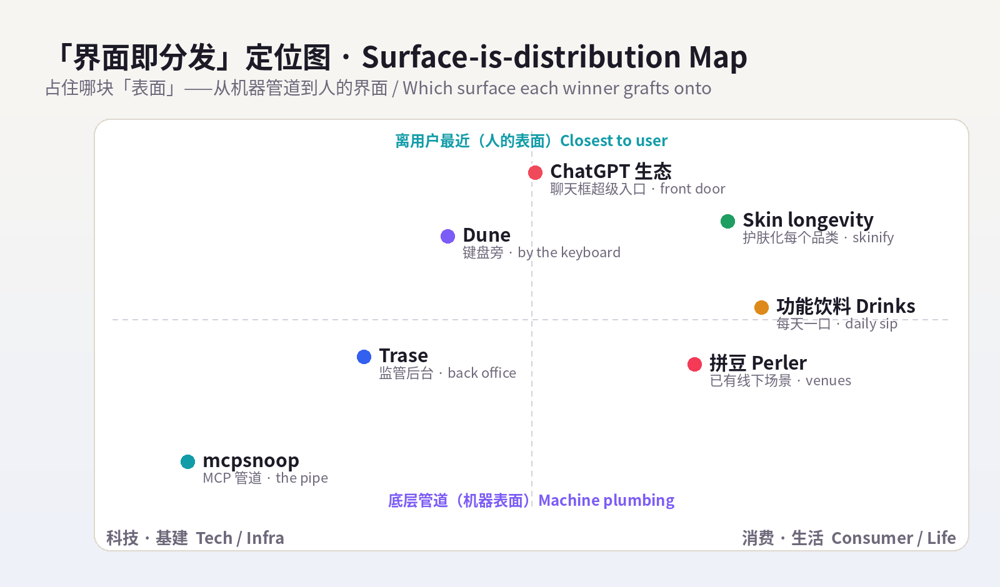
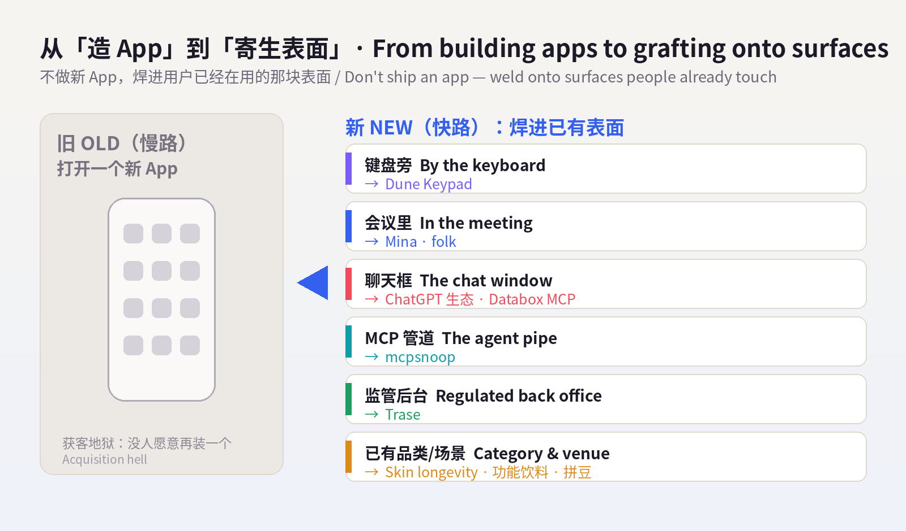
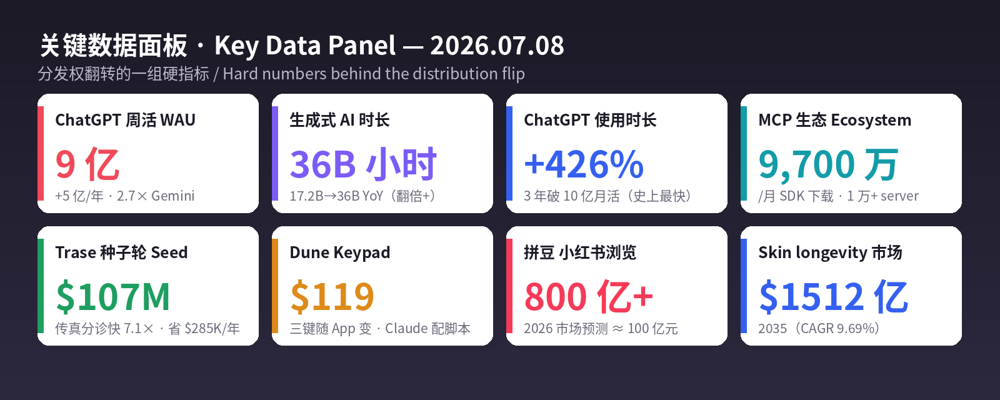

数据来源 / Sources: Product Hunt（本周 6 款「不做新 App」的产品、Dune Keypad 榜单页）、TechCrunch / Forbes / Notebookcheck（Dune Keypad，2026-07-03）、Hacker News / TechTimes（mcpsnoop「Wireshark for MCP」，Show HN 2026-07-04）、BusinessWire / MobiHealthNews / Fierce Healthcare（Trase $107M 种子轮，2026-06-25）、a16z《Notes on AI Apps in 2026》与《Top 100 Gen AI Consumer Apps 6th Ed.》、Sensor Tower《State of AI / State of Mobile 2026》、TechCrunch / CNBC / PitchBook（ElevenLabs $500M@$110 亿，2026-02-04，作背景数据）、Forbes / WhoWhatWear / Beauty Independent（skin longevity）、Keurig Dr Pepper《2026 State of Beverages》/ Forbes Summer Fancy Food Show（功能饮料）、知乎 / 中新网 / 搜狐 / AMZ123（小红书 拼豆 & 兴趣圈层）。 方法 / Method: WebSearch（US-only）公开检索摘要。web_fetch 对外站被 egress 拦截（allowlist 仅 npm/pypi/github/anthropic 等），Product Hunt / Hacker News / Sensor Tower / X / LinkedIn / 小红书均为登录墙或客户端渲染，无法直接抓取；统一以新闻、PR、榜单、报告摘要替代，无法获取的原始页面已跳过、未做绕过。为保每日新意，已排除 6/29–7/07 已深度分析过的产品（见 raw/2026-07-08/sources.md 完整名单）。 免责声明 / Disclaimer: 本报告为趋势研究，非投资建议。融资 / 估值 / 市场规模 / 份额为第三方公开披露或估算，随时可能变化；量化指标为平台或第三方口径，仅供参考。健康与美妆类趋势（skin longevity、功能饮料）仅作消费现象记录，不构成任何医疗、营养或美容建议，文中并列附上专家提醒。
一句话 / In one line： 昨天的信号是「能力过剩、控制稀缺」；今天它往前走了一步——当能力像自来水一样廉价，真正稀缺、真正卖钱的，是『用户已经在用的那块界面』。 于是今天所有赢家都在做同一个动作：不做新 App，把 AI「寄生 / 焊接」到人们已经天天在碰的表面上。 对开发者，是键盘旁边那三颗会「读懂你在用哪个 App」的键（Dune）；对基建，是钻进 MCP 管道里「看每一个字节」的探针（mcpsnoop）；对行业，是塞进医院「最脏最重」的监管后台、连传真机都替你分类（Trase）；对消费者，是 ChatGPT 变成 9 亿人的「超级入口」、AI 应用不再是图标而是聊天框里的一句话。分发权，正在从「你能不能被下载」翻转成「你在不在用户已经打开的那块屏幕上」。
In one line: Yesterday's signal was "capability is in surplus, control is scarce." Today it takes one step further: when capability is as cheap as tap water, the scarce, sellable thing is the surface the user is already on. So every winner today makes the same move — stop shipping a new app; graft / weld AI onto a surface people already touch every day. For developers, it's the three keys beside your keyboard that know which app you're in (Dune); for infra, a probe that sits inside the MCP pipe and sees every byte (mcpsnoop); for verticals, agents pushed into a hospital's heaviest, most-regulated back office — sorting even the fax machine (Trase); for consumers, ChatGPT becoming a 900M-person front door, where an AI "app" is no longer an icon but a sentence in a chat window. Distribution is flipping from "can you get downloaded" to "are you on the screen the user already has open."
两条线是同一句话：界面即分发。 过去比「能不能做到」、再比「做得好不好」、再比「敢不敢信 / 管不管得住」（昨天）；今天退到更靠前的一格——「你在不在用户已经在用的表面上」。 在一个人人都能造出能力的世界里，唯一抄不动的护城河，是你已经占住的那块表面。 谁占住了表面，谁就握住了这轮的分发权与定价权。
The two lines are one sentence: surface is distribution. We competed on "can it be done," then "is it done well," then "dare you trust it / can you contain it" (yesterday). Today the contest moves one square earlier — "are you on the surface the user already uses." In a world where anyone can manufacture capability, the one moat rivals can't copy is the surface you already occupy. Own the surface, and you own the distribution — and the pricing power — this round.


五条最强信号 / Five strongest signals
Five signals (EN): (1) PH's 6 launches, zero new apps — Dune (by the keyboard), Mina (in the call), folk (in the text thread), Databox MCP (in Claude's chat), Typeahead (in Mac autocomplete): "shipping AI as a new app is the slow path; welding onto a surface the user already touches is the fast path." (2) Dune — a $119 CNC-aluminum, mechanical, USB-C 3-key pad whose keys change per foreground app; tell Claude in plain English and it writes + binds the shortcut, plus a community-script Marketplace. Hardware as the agent's physical touchpoint. (3) mcpsnoop — a zero-config, single-binary transparent proxy between coding agent and MCP servers, streaming every JSON-RPC frame to your terminal; MCP is now 97M monthly SDK downloads, 10K+ public servers — the pipe is laid, time to sell the probe. (4) Trase — $107M seed (ARCH-led), an agentic OS for regulated industries; at Duke cardiology it triages 5,000+ faxes/month 7.1× faster than manual, unlocking $285,450 of annual capacity. Vertical agents win where it's messiest and most regulated. (5) ChatGPT as a 900M front door — a16z: Apps SDK + mini-apps + group chat let devs tap ChatGPT's 900M WAU (+500M/yr, 2.7× Gemini); 85+ apps already (flights/groceries/homes); Sensor Tower GenAI time 17.2B→36B hours, ChatGPT time +426%. The door to "a once-in-a-decade consumer-AI gold rush" is the chat window the user already opened.

昨天 OpenPrinter 卖「把硬件的控制权夺回来」，今天 Dune 反着用硬件——它不是让你多打开一个 App，而是把一小块铁焊在你已经在用的键盘旁边，让 AI「贴身待命」。 Project Mirage 做的这只 Dune，是一块 CNC 铝合金、机械剪刀脚、大约「一条口香糖」大小、插进 MacBook USB-C 口的三键小键盘，售价 $119。它最狠的一点是「上下文感知」：三颗键的功能随最前台的 App 实时改变——你在 VS Code / GitHub 里是一套，在 Claude / Openclaw 里是另一套，切到 Zoom / Teams / Google Meet 开会又变成会议控制器（静音 / 举手 / 录制）。而真正把门槛砸到地板的是它的 Claude Desktop 集成：你用大白话说一句「我想要一个 XX 快捷动作」，Claude 就替你把脚本写好、绑到某个 App 的某颗键上，不用碰任何配置；再配上一个社区脚本 Marketplace，可以直接安装别人做好的 agentic workflow。它精准踩中今天的主线——在「什么都能做」的 AI 世界里，最稀缺的是『离用户最近的那块表面』：键盘旁边这 3 平方厘米，就是 agent 的实体触点。TechCrunch（7/3）把它总结成「会议控制器 + 更多」，本质是把「打开某个 AI 工具」这一步彻底删掉——AI 不在某个窗口里，而在你伸手就够到的那颗键上。
Yesterday OpenPrinter sold "take hardware control back"; today Dune uses hardware the other way — not one more app to open, but a small slab welded beside the keyboard you already use, keeping AI on standby at arm's length. Project Mirage's Dune is a CNC-aluminum, scissor-switch, gum-stick-sized 3-key pad that plugs into a MacBook's USB-C port for $119. Its sharpest trick is being context-aware: the three keys change function in real time with the foreground app — one set in VS Code / GitHub, another in Claude / Openclaw, and a meeting controller (mute / raise-hand / record) the moment you're in Zoom / Teams / Google Meet. What drops the barrier to the floor is the Claude Desktop integration: say what you want in plain English and Claude writes the script and binds it to a key for that app — no config — backed by a community-script Marketplace of installable agentic workflows. It nails today's throughline — in an AI world where anything can be done, the scarce thing is the surface closest to the user: the 3 cm² beside your keyboard is the agent's physical touchpoint. TechCrunch (7/3) framed it as "meeting controller + more," but the real move is deleting the "open the AI tool" step entirely — AI isn't in a window; it's on the key you can already reach.
| 维度 Dimension | 分析 Analysis |
|---|---|
| 商业模式 Business model | 硬件一次性销售（$119）+ 脚本 Marketplace 生态（未来可抽成/订阅）。Hardware sale + script marketplace. |
| 核心价值 Core value | 上下文感知的物理触点：三键随 App 变，Claude 用自然语言即配即用。Context-aware physical keys, Claude-authored shortcuts. |
| 成功因素 Success | 精准卡「离用户最近的表面」+ 自然语言配置（零门槛）+ 社区脚本网络效应 + 手感/工业设计。Nearest-surface + NL setup + community. |
| 核心功能 Core features | 3 颗上下文感知键、USB-C 即插、Claude Desktop 生成脚本、MCP 直连、社区 Marketplace。3 keys, MCP, marketplace. |
| 细分市场 Niche | 开发者 / 重会议人群的「AI 快捷硬件」（macros-for-AI hardware）。AI-macro hardware. |
| 目标受众 Audience | 泡在 GitHub/VS Code/Claude 的开发者、跑 agent 的人、连轴开会的专业人士。Devs, agent-runners, meeting-heavy pros. |
| 品牌设计 Brand | 名字「Dune / Project Mirage」带极简科技感；工业设计（铝 + 机械键）主打「高级触点」。Minimal, tactile, premium. |
| 产品数据 Data | $119；PH 第 2 次发布、本周上榜（约 46 票）；TechCrunch 7/3、Forbes 6/8 报道。 |
| 链接 Link | producthunt.com/products/dune-4 · projectmirage.ai · TechCrunch 7/3 |
| 评论摘要 Reviews | 正面：「随 App 变键很聪明、用 Claude 一句话配脚本太省事、手感好」；关注点：仅 3 键+仅 Mac 的适用面、$119 溢价、Marketplace 生态能否养起来。Praise for context-switching & NL config; watch 3-key/Mac-only scope. |
如果 Dune 把 AI 焊到「人」的表面，mcpsnoop 把探针插进「机器与机器之间」的表面——agent 和 MCP server 之间那根管子。 它 7 月 4 日发到 GitHub、以 Show HN 亮相，一句话自我介绍就是「MCP 界的 Wireshark」：一个零配置、单文件的透明代理，坐进「coding agent ↔ MCP server」的数据通路正中间，把流过的每一个字节原样转发给真实客户端，同时把每一帧 JSON-RPC 复制到一个实时终端界面。它解决的痛点极其具体、又极其普遍：当一个 agent「行为诡异」——悄悄跳过一次工具调用、卡在某个响应上、或者协商出了和你预期不一样的能力集——唯一能在真实流量里看清这次故障的办法，就是站在管子里。 过去你只能靠猜；mcpsnoop 是第一个把这件事做成零配置、单文件的工具。它为什么此刻出现？因为管子已经铺满了：MCP 到 2026 年 3 月已达 9,700 万/月 SDK 下载、1 万+活跃公开 server，OpenAI、Google DeepMind、微软、AWS 全部原生接入。当一个协议成了 agent 世界的「TCP/IP」，卖「看管子的工具」就成了确定性的生意——这正是昨天「可信 / 可控」主线的延伸：你要控制 agent，先得看得见 agent 在管子里说了什么。
If Dune welds AI onto a human surface, mcpsnoop inserts a probe into a machine-to-machine surface — the pipe between an agent and its MCP servers. Shipped to GitHub on July 4 and posted as a Show HN, it introduces itself as "Wireshark for MCP": a zero-config, single-binary transparent proxy that sits in the data path between a coding agent and its MCP servers, forwarding every byte to the real client while copying each JSON-RPC frame to a live terminal. The pain is concrete and universal: when an agent misbehaves — silently skipping a tool call, hanging on a response, or negotiating a different capability set than expected — the only way to see that failure in real client traffic is to be inside the pipe. You used to guess; mcpsnoop is the first to make this zero-config and single-binary. Why now? The pipe is laid: MCP hit 97M monthly SDK downloads and 10,000+ active public servers by March 2026, with native adoption by OpenAI, Google DeepMind, Microsoft, and AWS. Once a protocol becomes the agent world's TCP/IP, selling the tool that watches the wire is a sure-thing business — the direct extension of yesterday's trust/control line: to control an agent, you must first see what it says on the wire.
| 维度 Dimension | 分析 Analysis |
|---|---|
| 商业模式 Business model | 开源工具起步（社区/心智占位），可向团队版 / 云端捕获 / 企业可观测性延伸。OSS now; team/cloud later. |
| 核心价值 Core value | 零配置、单文件，实时「透视」MCP 真实流量，定位 agent 诡异行为。Live, in-pipe MCP visibility. |
| 成功因素 Success | 踩中 MCP 爆发后的「可观测性空白」+ 极低使用门槛（单二进制）+ 类比强（Wireshark）。Timing + zero-config + strong analogy. |
| 核心功能 Core features | 透明代理、逐帧 JSON-RPC 抓取、实时终端界面、原样转发不影响生产。Transparent proxy, frame capture. |
| 细分市场 Niche | MCP / agent 的调试与可观测层（observability for agent tooling）。Agent-tooling observability. |
| 目标受众 Audience | 构建 / 调试 MCP server 与 coding agent 的开发者、平台与 infra 团队。MCP & agent builders. |
| 品牌设计 Brand | 名字「snoop」直给「窥探/嗅探」，Wireshark 类比一秒建立认知。Literal, analogy-led. |
| 产品数据 Data | 2026-07-04 GitHub + Show HN；单二进制、零配置；MCP 背景：97M/月下载、10K+ server。 |
| 链接 Link | TechTimes 报道 · Hacker News / Show HN |
| 评论摘要 Reviews | 正面（HN 向）：「终于能看真实流量、单文件太香、比官方 Inspector 更透明」；关注点：敏感数据/密钥在代理里的安全、性能开销、长期维护与商业化路径。Praise for transparency; watch security & upkeep. |
前两个是横向的「表面」，Trase 走垂直——而且专挑别人嫌脏、监管最重的表面下手：医疗与国防的合规后台。它 6 月 25 日宣布 $107M 种子轮（ARCH Venture Partners 领投，Red Cell Partners 等跟投）——一个「种子轮」就融到一亿美元，本身就是「2026 巨型种子轮」的活样本。产品 Trase Origin 是一套「监管行业的 agentic 操作系统」：用它搭出面向患者接入 / 导航、临床研究、资源调度、医生支持、诊疗路径自动化、护理管理、收入周期（RCM）的专用 agent。最能说明问题的是它在 Duke University 心内科的落地——把每月 5,000+ 张传真的分诊自动化：这些传真过去要医助 / 护士一张张人肉分拣，Trase 的路由 agent 做到比人工快 7.1 倍，一年释放 $285,450 的人力产能，而且明确说这些小时是「回投到病人照护、不是砍人头」。这三点——一亿种子轮、监管腹地、连传真机都不放过——正好把今天的主线钉死：表面越难、监管越重、越没人愿意碰，一旦被 agent 占住，护城河就越深。 昨天 Rebar 扎进暖通/管道的「脏活」，今天 Trase 扎进医院合规的「重活」——同一套打法：软件 + 数据 + 工作流 + 行业 know-how 打包成一层行业专属 OS，用别人抄不动的深度筑墙。
The first two are horizontal surfaces; Trase goes vertical — and deliberately picks the surface others find dirtiest and most regulated: the compliance back office of healthcare and defense. On June 25 it announced a $107M seed (led by ARCH Venture Partners, with Red Cell Partners and others) — a hundred-million-dollar seed is itself a specimen of the "2026 mega-seed." Its product, Trase Origin, is an agentic operating system for regulated industries: build purpose-made agents for patient access / navigation, clinical research, resource optimization, clinician support, care-pathway automation, care management, and revenue-cycle management. The clearest proof is its deployment at Duke University cardiology — automating triage of 5,000+ faxes a month that medical assistants and nurses used to hand-sort one by one: Trase's routing agent runs 7.1× faster than manual and unlocks $285,450 of annual capacity, explicitly "reinvested in patient care, not headcount reduction." Those three facts — a hundred-million seed, the regulated core, and even the fax machine — pin today's throughline: the harder, more regulated, more untouchable the surface, the deeper the moat once an agent occupies it. Yesterday Rebar drilled into the dirty work of HVAC/plumbing; today Trase drills into the heavy work of hospital compliance — same playbook: software + data + workflow + domain know-how bundled into an industry-specific OS, walled by depth rivals can't copy.
| 维度 Dimension | 分析 Analysis |
|---|---|
| 商业模式 Business model | 垂类 B2B / 企业平台：按 agent / 工作量 / 席位向医院与监管机构收费。Vertical enterprise platform. |
| 核心价值 Core value | 在监管最重的后台跑得住的 agent OS：把人肉合规流程自动化、可审计。Auditable agents for regulated ops. |
| 成功因素 Success | 选「最难最重」的表面（高门槛=高护城河）+ 旗舰客户背书（Duke）+ 顶级基金（ARCH）+ 硬 ROI 数据。Hard surface + marquee proof + hard ROI. |
| 核心功能 Core features | Trase Origin：患者接入/导航、临床研究、RCM、诊疗路径、传真分诊等专用 agent。Purpose-built regulated agents. |
| 细分市场 Niche | 监管 / 高风险行业（医疗、国防）的 agentic 操作系统。Agentic OS for regulated industries. |
| 目标受众 Audience | 医院 / 医疗系统、临床研究、国防等合规密集机构的运营与 IT。Health systems, clinical research, defense ops. |
| 品牌设计 Brand | 名字「Trase」（trace/轨迹感）+「Origin」暗示「一切从这里搭起」；叙事强调可审计与安全。Trust-and-trace narrative. |
| 产品数据 Data | $107M 种子（ARCH 领投，2026-06-25）；Duke 传真分诊快 7.1×、年释放 $285,450；覆盖医疗+国防。 |
| 链接 Link | BusinessWire — Trase $107M · MobiHealthNews |
| 评论摘要 Reviews | 正面（行业向）：「传真分诊这种苦活最该自动化、ROI 实打实、不砍人而是提产能」；关注点：临床/合规场景的错误代价与责任边界、HIPAA/审计、老系统集成难度。Praise for hard ROI; watch clinical liability & integration. |
把前三个串起来，会看到一条被 a16z 和数据同时确认的暗线：分发权正在翻转——从「你能不能被下载」变成「你在不在用户已经打开的那块表面上」。 a16z 在《Notes on AI Apps in 2026》里说得直白：随着 OpenAI Apps SDK、苹果对迷你应用的支持、以及 ChatGPT 群聊的推出，消费开发者现在能直接吃到 ChatGPT 的 9 亿周活——这会点燃「消费科技十年一遇的淘金潮」。ChatGPT 自己已经挂上 85+ 应用（在里面订 Expedia 机票、用 Instacart 买菜、刷 Zillow 房源），是「任何 AI 公司做过的、最激进的一次『超级 App』尝试」；它比第二名 Gemini 网页大 2.7×、移动大 2.5×，周活一年 +5 亿到 9 亿（全球 >10% 的人每周在用）。这解释了为什么今天在 Product Hunt 上，6 款产品没有一款让你打开新 App——Dune 焊在键盘旁、Mina 长在会议里、folk 活在短信线程里、Databox MCP 住在 Claude 聊天框里、Typeahead 藏在 Mac 自动补全里。Sensor Tower 的数据给这条线加了砝码：生成式 AI 时长 17.2B→36B 小时、ChatGPT 下载 +148% / 时长 +426%、3 年成为史上最快破 10 亿月活的 App；连底层协议都在膨胀——MCP 9,700 万/月下载、1 万+ server。就连语音也在变成一层「表面」：ElevenLabs $500M D 轮、估值 $110 亿（2026-02 作背景）、$3.3 亿 ARR、押注 ElevenAgents，本质是把「会说话」焊进每一个客服 / 应用。结论一句话：当能力免费、模型趋同，钱不再流向『又一个 App』，而流向『占住用户已经在用的那块表面』的人。
String the first three together and one throughline appears, confirmed by both a16z and the data: distribution is flipping — from "can you get downloaded" to "are you on the surface the user already has open." a16z's Notes on AI Apps in 2026 says it plainly: with the OpenAI Apps SDK, Apple's mini-app support, and ChatGPT group chat, consumer developers can now tap ChatGPT's 900M weekly users directly — igniting "a once-in-a-decade gold rush in consumer tech." ChatGPT already hosts 85+ apps (book Expedia flights, order Instacart groceries, browse Zillow) — "the most aggressive super-app play any AI company has made" — and is 2.7× larger than #2 Gemini on web, 2.5× on mobile, with WAU +500M in a year to 900M (>10% of humanity weekly). That's why today's six Product Hunt launches ask you to open no new app — Dune by the keyboard, Mina in the meeting, folk in the text thread, Databox MCP in Claude's chat, Typeahead in Mac autocomplete. Sensor Tower adds weight: GenAI time 17.2B→36B hours, ChatGPT downloads +148% / time +426%, fastest app ever to 1B MAU (3 years); even the base protocol is swelling — MCP 97M monthly downloads, 10K+ servers. Voice is becoming a surface too: ElevenLabs' $500M Series D at $11B (Feb 2026, as context), $330M ARR, betting on ElevenAgents — welding "can speak" into every support flow and app. In one line: when capability is free and models converge, money no longer flows to "yet another app" — it flows to whoever occupies the surface the user already uses.
| 数据点 Data point | 数值 Figure | 来源 Source |
|---|---|---|
| ChatGPT 周活 / 年增 | 9 亿 WAU（一年 +5 亿） | a16z Notes on AI Apps |
| ChatGPT vs Gemini | 网页 2.7× / 移动 2.5× | a16z |
| ChatGPT 内挂应用 | 85+（机票/买菜/看房） | a16z |
| 生成式 AI 时长（YoY） | 17.2B → 36B 小时 | Sensor Tower |
| ChatGPT 增长 | 下载 +148% / 时长 +426% / 3 年破 10 亿月活 | Sensor Tower |
| MCP 生态 | 9,700 万/月下载、1 万+ server | TechTimes / Anthropic |
| ElevenLabs（背景） | $500M D 轮 / $110 亿估值 / $3.3 亿 ARR | TechCrunch / CNBC |
| PH 本周 AI 产品 | 6 款「不做新 App」 | Product Hunt |
机器那侧在抢「表面」，消费这侧也在上演同一个动作。最典型的是护肤圈的范式切换——从「抗老（anti-aging）」转向「皮肤长寿（skin longevity）」。过去卖的是「把已经出现的皱纹擦掉」，现在卖的是「在细胞层面保住皮肤的结构、韧性与功能，让它几十年少出问题」——预防 + 再生，而不是事后补救。WhoWhatWear 直接下判词：「2026，skin longevity 上位，这 3 个旧趋势出局。」资本也跟着调头：资生堂、兰蔻、Dior、Vichy（Vichy 今年 2 月开了「长寿门诊 Longevity Clinic」）都在投「护肤即大健康」。而它和今天主线的接口，是一个词——「skinification（护肤化）」：把护肤级的活性成分（胜肽、烟酰胺、神经酰胺、抗氧化剂、生长因子、再生成分）寄生进彩妆、身体护理、护发的每一个品类，让「护肤」不再是一个单独的步骤，而是长在你已经在用的每一件产品里——这正是消费版的「界面即分发」：不新增一个瓶子，而是把功效焊进你已经在涂的那一层。市场给的数字也够硬：抗老赛道 2026 约 $657.8 亿 → 2035 约 $1512.3 亿、年化 9.69%。
While machines grab surfaces, consumers stage the same move. Nowhere clearer than skincare's paradigm shift — from "anti-aging" to "skin longevity." The old pitch was "erase wrinkles once they appear"; the new one is "preserve skin's structure, resilience, and function at the cellular level so it fails less over decades" — prevention + regeneration, not repair after the fact. WhoWhatWear is blunt: "In 2026, skin longevity is in — these 3 trends are out." Capital is turning with it: Shiseido, Lancôme, Dior, and Vichy (which opened a Longevity Clinic in February) are all investing in skincare-as-wellness. Its interface with today's throughline is one word — "skinification": pushing skincare-grade actives (peptides, niacinamide, ceramides, antioxidants, growth factors, regenerative actives) into makeup, body care, and hair care, so "skincare" is no longer a separate step but lives inside every product you already use — the consumer version of surface is distribution: don't add a bottle, weld the benefit into the layer you're already applying. The numbers are hard too: the anti-aging category runs ~$65.78B (2026) → ~$151.23B (2035), 9.69% CAGR.
⚠️ 平衡视角 / Balance: 「细胞层面抗老 / 长寿」概念性强、营销先行，多数宣称仍缺乏长期人体证据；胜肽 / 烟酰胺 / 神经酰胺等有一定研究支持，但「逆转衰老」属夸张表述。本段仅记录消费趋势，不构成任何医疗或美容建议。 The "cellular longevity" framing is concept-forward and marketing-led; most claims still lack long-term human evidence (peptides/niacinamide/ceramides have some support, but "reverse aging" is overreach). Trend documentation, not medical or cosmetic advice.
| 维度 Dimension | 分析 Analysis |
|---|---|
| 商业模式 Business model | 高端护肤 + 诊所 + 补剂的「大健康」组合；DTC 与百货 / 医美渠道。Prestige skincare + clinic + supplements. |
| 核心价值 Core value | 从「遮盖衰老」转「维护皮肤长期功能」：预防、再生、屏障健康。Preserve skin function over decades. |
| 成功因素 Success | 抗衰焦虑 + 长寿/健康大叙事 + 成分科学背书 + skinification 跨品类渗透。Longevity zeitgeist + science + skinification. |
| 核心功能 Core features | 胜肽/烟酰胺/神经酰胺/生长因子/再生成分；屏障与微生态；护肤化彩妆/身体/护发。Regenerative actives, barrier. |
| 细分市场 Niche | 「皮肤长寿 / 养寿护肤」——预防再生型，而非事后抗皱。Preventative-regenerative skin longevity. |
| 目标受众 Audience | 关注长期健康、愿为「预防 + 科学」买单的中高端消费者（跨年龄，非仅熟龄）。Prevention-minded, science-led buyers. |
| 品牌设计 Brand | 语汇从「anti-aging」改为「longevity / pro-aging / skin health」；诊所化、医研感、克制高级。Wellness-clinical, restrained. |
| 产品数据 Data | 市场 $657.8 亿（2026）→ $1512.3 亿（2035），CAGR 9.69%；资生堂/兰蔻/Dior/Vichy 入局；Vichy 2 月开长寿门诊。 |
| 链接 Link | Forbes — Longevity Beauty 2026 · WhoWhatWear |
| 评论摘要 Reviews | 正面：「从『抗老焦虑』转『长期养护』更健康、成分更实在、跨品类方便」；专家/关注点：概念营销易夸大、缺长期证据、价格虚高。Healthier framing; watch hype & thin evidence. |
同样的「寄生进已有表面」，在饮料里长成另一副样子：把身份、情绪、功能，焊进你每天都在喝的那一口。 Keurig Dr Pepper 的《2026 State of Beverages》给出定调——Gen Z 的饮料选择已经成为一种「自我表达」：喝什么，signals 你的身份、情绪与价值观；63% 的 Gen A/Z 说朋友 / 博主 / 社交流里在喝什么会影响自己的选择。在「表达」这层壳下面，是硬核的功能化：蛋白 shot（protein shot） 成了下一个爆点——Gen Z 每周喝蛋白饮料的概率高 50%、喝运动饮料高 75%（对比千禧+），小瓶即饮正好卡「随身、即时」；「2024–25 是蛋白年，2026 是纤维年」，一整批功能饮料主打肠道 / 专注 / 放松，用 adaptogen、植物活性和「成人感」包装。口味上，「swicy（甜辣）」继续进化成水果向——芒果哈瓦那、番石榴墨西哥椒；无酒精功能汽水（Poppi、Olipop）持续扩张。一句话：饮料不再只是解渴，它是最低门槛的「表达界面」——把「我是谁 / 我此刻想要什么」焊进一口能随手买到的液体里。
The same graft-onto-an-existing-surface move grows differently in drinks: weld identity, mood, and function into the sip you already take every day. Keurig Dr Pepper's 2026 State of Beverages sets the tone — Gen Z's drink choice is now a form of self-expression: what you drink signals identity, mood, and values, and 63% of Gen A/Z say what friends / creators / feeds are drinking shapes their choice. Under the expression shell sits hard function: protein shots are the next breakout — Gen Z is 50% more likely to drink protein beverages weekly and 75% more likely for sports drinks (vs Millennials+), and the small ready-to-drink format nails portable + instant. "2024–25 was protein; 2026 is fiber" — a wave of functional drinks for gut / focus / relaxation, dressed in adaptogens, botanicals, and "adult" branding. On flavor, "swicy" (sweet-heat) evolves fruit-forward — mango habanero, guava jalapeño — while zero-alcohol functional sodas (Poppi, Olipop) keep expanding. In one line: a drink is no longer just thirst — it's the lowest-friction expression surface, welding "who I am / what I want right now" into a liquid you can grab on the go.
⚠️ 平衡视角 / Balance: 功能饮料的「肠道 / 专注 / 放松」等宣称多为营销话术，adaptogen 等成分证据有限；蛋白 / 纤维摄入因人而异，过量或含糖版本未必更健康。仅作消费趋势记录，非营养建议。 Functional claims (gut/focus/relaxation) are largely marketing; adaptogen evidence is limited; protein/fiber needs vary and sugary versions aren't automatically healthier. Trend documentation, not nutrition advice.
| 维度 Dimension | 分析 Analysis |
|---|---|
| 商业模式 Business model | 快消品牌 + DTC + 社媒带货；小瓶即饮 / 功能配方溢价。CPG + DTC + social commerce. |
| 核心价值 Core value | 把身份/情绪/功能焊进「每天一口」：低门槛的自我表达 + 功能补给。Identity + function in a daily sip. |
| 成功因素 Success | 饮料=表达的社媒放大（63% 受同伴影响）+ 蛋白/纤维健康大势 + swicy 口味钩子 + 无酒精功能化。Expression + function + flavor hook. |
| 核心功能 Core features | 蛋白 shot、纤维/肠道/放松功能饮、adaptogen、swicy 水果辣、无酒精功能汽水。Protein shots, fiber, swicy. |
| 细分市场 Niche | 「表达型 + 功能型」即饮饮料（超越单纯解渴 / 提神）。Expressive-functional RTD drinks. |
| 目标受众 Audience | Gen Z / Gen A 为主，重社媒、重健康标签、爱尝鲜的年轻消费者。Social-native, health-tagged young drinkers. |
| 品牌设计 Brand | 「成人感」高级包装 + 鲜明色彩/态度文案；口味命名戏剧化（mango habanero）。Grown-up, bold, dramatic flavors. |
| 产品数据 Data | 63% Gen A/Z 受同伴影响；Gen Z 蛋白饮 +50%/运动饮 +75%（周频）；swicy→水果辣；Poppi/Olipop 扩张。 |
| 链接 Link | Keurig Dr Pepper 2026 State of Beverages · Forbes — Summer Fancy Food 2026 |
| 评论摘要 Reviews | 正面：「小瓶蛋白很方便、口味有新鲜感、无酒精也能有仪式感」；关注点：功能宣称虚、含糖/添加、价格偏贵、跟风易过气。Convenient & fun; watch hype, sugar, price. |
同一个「寄生进已有表面」的动作，在中国小红书上长成了一颗塑料珠——拼豆（用微小塑料颗粒拼像素画的手工） 在 2026 上半年彻底爆了。小红书上话题浏览 800 亿+（部分口径近千亿）、近 30 天新增互动 4,000 万+，热度一度盖过美妆、时尚、家居；官方「我染上了拼豆」活动已办 3 季。商业数据更凶：淘宝相关搜索同比约 +500%、抖音 Z 世代团购订单春节同比 +9018%、2025 主流电商销售额 29.1 亿元、机构预测 2026 市场冲 100 亿、毛利传高达 90%（被叫「新口红经济」）、出海还能做 7 倍溢价。但它和今天主线真正的接口是「寄生进已有线下场景」：北上广每城 200+ 拼豆体验店，而且不止 DIY 店——温泉、密室、桌游馆、自习室都在加拼豆体验。它不新开一个业态，而是把自己焊进你已经会去的那些空间——这正是消费版「界面即分发」。平台侧的叙事也在变：2026 是「效果化 / 精准价值」时代，打法从追「破圈爆款」转向极致精细化的人群 / 场景 / 兴趣圈层（「农村包围城市」），拼豆、谷子、手账、胶片正是被「小众兴趣圈层化」抬进大众视野的样本；连出游都被兴趣重写——「为一场演出赴一座城、为一门手艺去一个村」。
The same graft-onto-an-existing-surface move grows in China as a single plastic bead — perler / fuse beads (拼豆), pixel art built from tiny plastic beads, went fully viral on Xiaohongshu in H1 2026. Topic views hit 80B+ (some counts near 100B), with 40M+ new interactions in 30 days, briefly outpacing cosmetics, fashion, and home; the official "I got hooked on perler beads" campaign has run three seasons. The commerce is fiercer: Taobao searches ~+500% YoY, Douyin Gen-Z group-buys +9018% at Spring Festival, 2025 mainstream e-commerce sales ¥2.91B, 2026 projected ~¥10B, margins reportedly up to 90% (dubbed the "new lipstick economy"), with 7× markups overseas. But its real interface with today's throughline is grafting into existing offline venues: 200+ perler experience shops in each of Beijing/Shanghai/Guangzhou — and not just DIY stores; hot springs, escape rooms, board-game cafes, and self-study rooms are all adding perler experiences. It doesn't open a new format; it welds itself into the spaces you already go — the consumer surface is distribution. The platform narrative is shifting too: 2026 is the "outcome / precise-value era," moving from chasing viral hits to hyper-granular persona / scene / interest-circle targeting ("surround the city from the countryside"); perler beads, anime goods (谷子), hand-journaling, and film photography are all niches carried into the mainstream — and even travel is rewritten by interest: "chase a gig to a city, chase a craft to a village."
| 维度 Dimension | 分析 Analysis |
|---|---|
| 商业模式 Business model | 手工 DIY 材料/成品电商 + 线下体验店/场景嵌入 + 内容种草。Craft goods + offline experience + content. |
| 核心价值 Core value | 低门槛、可晒、能进流（心流感）的手作仪式；寄生进已有线下场景。Flow-state craft, grafted offline. |
| 成功因素 Success | 兴趣圈层化红利 + 高毛利 + 强社媒可晒性 + 场景嵌入（温泉/密室/自习室）+ 官方活动助推。Niche + margin + shareable + venues. |
| 核心功能 Core features | 拼像素画（图纸/配色/熨烫定型）；周边化（谷子/手账联动）；线下体验课。Pixel craft + experience classes. |
| 细分市场 Niche | 小众手作 / 兴趣圈层消费（「新口红经济」型悦己小额高频）。Niche craft & interest-circle spend. |
| 目标受众 Audience | Gen Z + 千禧一代（合计 90%+），求「活人感 / 心流 / 悦己」的年轻人。Gen Z/Millennials seeking flow & self-treat. |
| 品牌设计 Brand | 「像素 / 童趣 / 治愈」视觉 + 可高度个性化；平台官方 IP 活动加持。Pixel-cute, healing, personalizable. |
| 产品数据 Data | 小红书 800 亿+浏览、30 天 +4000 万互动；淘宝搜索 +500%；2025 销售 29.1 亿→2026 预测 100 亿；毛利≈90%。 |
| 链接 Link | 知乎：小红书 80 亿浏览拼豆爆火 · 中新网：疯狂的拼豆 |
| 评论摘要 Reviews | 正面：「解压、有心流、成品能晒、约朋友一起拼」；关注点：同质化与过气风险、盗版图纸/版权、材料环保与安全、热度可持续性。Relaxing & shareable; watch fads & IP. |
| 产品 Product | 类别 Category | 商业模式 Model | 细分 Niche | 目标受众 Audience | 关键数据 Key data | 占住哪块「表面」The surface it grafts onto |
|---|---|---|---|---|---|---|
| Dune Keypad | AI 硬件 HW | 硬件 $119 + 脚本 Marketplace | AI 快捷硬件 | 开发者/重会议人群 | $119；三键随 App 变；Claude 一句配脚本 | 键盘旁的物理触点 The keyboard's edge |
| mcpsnoop | 开发者工具 Dev tool | 开源起步（可企业化） | MCP/agent 可观测层 | MCP/agent 开发者 | Show HN 7/4；单文件；MCP 97M/月下载 | agent↔MCP 的管道 The MCP pipe |
| Trase | 垂类 agent Vertical AI | 垂类企业平台 | 监管行业 agentic OS | 医院/临床/国防运营 | $107M 种子；传真分诊快 7.1×；省 $285K/年 | 监管最重的后台 The regulated back office |
| ChatGPT 生态 (趋势 Trend) | 消费 AI 分发 | 平台 + Apps SDK + 迷你应用 | 消费 AI 超级入口 | 9 亿周活消费者 | 9 亿 WAU；85+ 应用；时长 +426% | 用户已打开的聊天框 The open chat window |
| Skin longevity | 消费/美妆 Consumer | 高端护肤+诊所+补剂 | 皮肤长寿/养寿护肤 | 求预防的中高端 | 市场 $657.8 亿→$1512.3 亿；CAGR 9.69% | 你已在涂的每个品类 Every layer you apply* |
| 功能饮料 Beverages | 消费/食饮 Consumer | 快消+DTC+社媒 | 表达型+功能型即饮 | Gen Z/Gen A | 63% 受同伴影响；蛋白饮 +50% 周频 | 每天喝的那一口 The daily sip |
| 拼豆 Perler beads | 消费/手作 Consumer | 材料电商+线下体验 | 小众手作/兴趣圈层 | Gen Z/千禧（90%+） | 800 亿+浏览；2026 预测 100 亿 | 已有线下场景 Venues you already go* |
* 美妆与健康类趋势的功效宣称多为营销口径、证据有限，见各节「平衡视角」。Efficacy claims for beauty/health trends are marketing-led with limited evidence; see each "Balance" note.
1. 主题词从「刹车」升级到「表面」：分发权翻转。 / From "brakes" to "surface": the distribution flip. 昨天的终点是「可信 / 可控 / 可拥有」；今天再往前退一格——当能力免费、模型趋同，胜负手是『你在不在用户已经在用的那块表面上』。 今天四个科技样本（Dune 焊键盘、mcpsnoop 钻管道、Trase 占监管后台、ChatGPT 变超级入口）是四种「占表面」的姿势。
Yesterday's endpoint was trust / control / ownership; today retreats one square earlier — when capability is free and models converge, the deciding move is "are you on the surface the user already uses." Today's four tech specimens (Dune on the keyboard, mcpsnoop in the pipe, Trase in the regulated back office, ChatGPT as the front door) are four postures for occupying a surface.
2. 「不做新 App」正在成为默认打法。 / "Don't ship a new app" is becoming the default. Product Hunt 本周 6 款 AI 产品没有一款让你打开新 App；a16z 把它抬到战略高度：ChatGPT 9 亿周活 + Apps SDK = 消费 AI 十年一遇淘金潮的入口。新 App 是慢路、是获客地狱；焊到已有表面（键盘 / 会议 / 聊天框 / 传真机）才是快路。获客的重心，从「让人下载你」变成「出现在人已经打开的地方」。
This week's six PH launches ask you to open no new app; a16z elevates it to strategy: ChatGPT's 900M WAU + Apps SDK = the door to a once-a-decade consumer-AI gold rush. A new app is the slow path and an acquisition hell; welding onto an existing surface (keyboard / meeting / chat window / fax machine) is the fast path. Acquisition shifts from "get them to download you" to "appear where they already are."
3. 垂类赢在「最难最重的表面」：越脏、越受监管，护城河越深。 / Verticals win on the hardest surface: dirtier and more regulated means a deeper moat. Trase 专挑医院合规后台、连传真机都做（$107M 种子、快 7.1×），延续昨天 Rebar 扎暖通/管道的打法——通用工具泛滥时，别人嫌脏、监管最重、集成最烦的表面，一旦占住就最难被抄。 a16z 也把「行业 / 物理 AI」列为 2026 主线。
Trase targets the hospital compliance back office and even the fax machine ($107M seed, 7.1× faster), extending yesterday's Rebar-in-the-trades playbook — when general tools flood, the surface others find dirtiest, most regulated, and most annoying to integrate is the hardest to copy once occupied. a16z lists industrial / physical AI as a 2026 throughline too.
4. 消费端也是「界面即分发」：把功效/身份焊进已有品类与场景。 / Consumers do it too: weld benefit/identity into existing categories and venues. Skin longevity 用 skinification 把护肤寄生进彩妆 / 护发 / 身体（不新增一个瓶子）；功能饮料把身份 / 功能焊进「每天一口」；拼豆寄生进温泉 / 密室 / 自习室（不新开业态）。三者都不新增一个入口，而是长进你已经在用的那层。
Skin longevity uses skinification to graft skincare into makeup / hair / body (no new bottle); functional drinks weld identity / function into the daily sip; perler beads graft into hot springs / escape rooms / self-study rooms (no new format). None add a new entry point — they grow into the layer you already use.
5. 情绪与功效可以先行，但报表要并列「证据」。 / Emotion and efficacy can lead — but the ledger must show the evidence. skin longevity 的「细胞抗老」、功能饮料的「肠道 / 放松」多为营销话术，长期证据有限；拼豆的高毛利也伴随同质化与过气风险。对做产品 / 投资的人，信号是：占表面能拿分发，但长青的是能兑现承诺（功效 / 复购 / 留存）的那一批。 本报告并列记录专家提醒，不做健康或美容背书。
"Cellular anti-aging" (skin longevity) and "gut/relaxation" (functional drinks) are largely marketing with thin long-term evidence; perler beads' fat margins come with sameness and fad risk. For builders/investors: occupying a surface buys distribution, but the durable winners are those who actually deliver (efficacy / repeat / retention). This report lists the expert caveats alongside — no health or beauty endorsement.
免责声明 / Disclaimer： 本报告由自动化每日任务生成，仅作趋势研究与信息汇总，非投资建议，亦非医疗 / 营养 / 美容建议。所有融资、估值、市场规模、增长与份额数据均来自第三方公开披露或估算，可能不准确或已过时；产品信息（尤其早期 / 原型阶段，及无长期证据的健康 / 美妆趋势）以官方为准，请自行独立核实。This report is an automated daily research digest — not investment, medical, or beauty advice. Figures are third-party estimates and may change; verify independently.